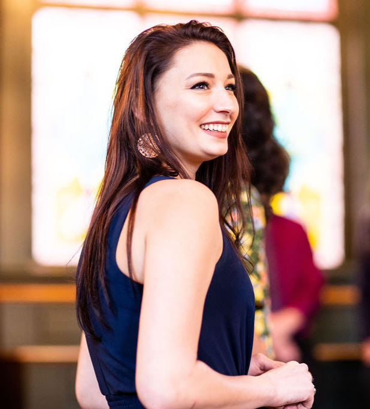

Keisha Hepner

About Me
The first job I ever had was at a supermarket working customer service. Most of my jobs were retail until I discovered
the banking industry. I was in banking for a number of years, specifically in new accounts both business and perosnal,
and loan management. I also did some work in their trust department which was actually really interesting. I made a
big move and had to switch jobs. I ended up having to get a retail job to keep my move and goals on track. After
working in that job for two years and working in customer serive for 15 years, I decided it was time to make a change.
I love working with people and being on a team, however customer service jobs that cater to the vast public can get
tiresome and I decided I needed a change. I wanted to feel challenged in my work and accomplished when I could
actually
see the fruits of my labor. I have friends who are in the tech industry and they really enjoy it. Listening to their
experiences made me feel this industry would provide everything I was looking for:
- working in a team
- constant flow of new challenges
- The ability to be creative
- Autonomy in the workplace
- Transferrable skills should I want to try something different but still in tech.
This industry will also allow me to have time to balance work and my personal life. I have a sweet, big ol' German
Shepherd mix dog and we love to go out in the forest and hike. One of my favorite things to do in the forest is hunt
for mushrooms. I have been mushroom foraging for about 9 years now and there is still more to learn everyday. When
we aren't in the forest, Tucker and I like to spend our days on the river or just sunbathing in the backyard.
Projects I have created
- Hello World
This is the very first project I created! It uses the language html.
- Tucker's Blog
This project is for Tucker's Blog and it uses the language html.
- Casey's Crazy Cupcakes
This project is for a cupcake website and it uses html.
- Section in Review
This project outlines everything I learned during my first week at Epicodus. This project uses both
html and
bootstrap.